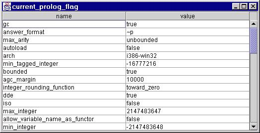

Here are some significant features of the interface and its implementation:
All Java values and object references which are passed between Prolog engines and Java VMs via JPL's Prolog API are seen as instances of types within this simplified JPL type system:
a datum (this term is introduced, out of necessity, to refer jointly to values and refs)is a value (values are copied between Prolog and the JVM)
is a boolean
or a char
or a long, int, short or byte
or a double or float
or a string (an instance of java.lang.String)
or a void (an artificial value returned by calls to Java void methods)or a refis null
or an object (held within the JVM, and represented in Prolog by a canonical reference)is an array
or a class instance (other than of java.lang.String)
boolean has two values, represented by @(true) and @(false)char values are represented by corresponding Prolog integers
int, short and byte values are represented by corresponding Prolog integers
long values are represented as Prolog integers if possible (32-bit in current SWI-Prolog), else as jlong(Hi,Lo) where Hi is an integer corresponding to the top32 bits of the long, and Lo similarly represents the lower 32 bits
double and float values are represented as Prolog floats (which are equivalent to Java doubles) (there may be minor rounding, normalisation or loss-of-precision issues when a Java float is widened to a Prolog float then narrowed back again, but what the heck)
string values (immutable instances of java.lang.String) are represented as Prolog atoms (in UTF-8 encoding)
null has only one value, represented as @(null)
void has only one value, represented as @(void)
array and class instance references are currently represented as @(Tag), where Tag ia an atom whose name encodes a JNI global reference value; this may change, but won't affect Prolog programs which respect the opacity of references
void is represented as void
null is represented as null
the primitive types are represented as boolean, char, byte, short, int, long, float, double
classes are represented as class(package_parts,classname_parts)e.g. class([java,util],['Date'])array types are represented as array(type)e.g. array(boolean)
This structured notation for Java types is designed to be convenient for composition and decomposition by matching (unification).e.g. array(class([java,lang],['String'])
Examples:
'Z' denotes boolean'B' denotes byte
'C' denotes char
'S' denotes short
'I' denotes int
'J' denotes long
'F' denotes float
'D' denotes double
'Ljava/util/Date;' (for example) denotes the Java class java.util.Date
'[type' denotes an array of type
'(argument_types)return_type' denotes the type of a method
Examples:
'java.util.Vector' denotes the Java class java.util.Vector
'[B' denotes an array of boolean
'[Ljava.lang.String;' denotes an array of string
jpl_new( 'javax.swing.JFrame', ['frame with dialog'], F)which binds F to a new object reference, e.g.
@('J#0008272420')(not that the details of this structure are of any necessary concern to the Prolog programmer or to the applications she writes).
array(boolean).
jpl_call( +Ref, +Method, +Params, -Result)e.g.
jpl_call( F, setVisible, [@(true)], _)which calls the setVisible method of the object to which F refers, effectively passing it the Java value true.
(This call should display the new JFrame in the top left corner of the desktop.)
Note the anonymous variable passed as the fourth argument to jsp_call/4. A variable in this position receives the result of the method call: either a value or a reference. Since SetVisible() is a void method, the call returns the (artificial) reference @(void).
Some may prefer to code this call thus:
jpl_call( F, setVisible, [@true], @void)which documents the programmer's understanding that this is a void method (and fails if it isn't :-).
jpl_get( 'java.awt.Color', pink, Pink)which binds the Prolog variable Pink to a reference to the predefined java.awt.Color "constant" which is held in the static final .pink field of the java.awt.Color class.
More generally, jpl_get/3 has the following interface:
jpl_get( +Class_or_Object, +Field, -Datum)If the first argument represents a class, then a static field of that class with FieldName is accessed.
jpl_set( +Class_or_Object, +Field, +Datum)where Datum must be a value or reference of a type suitable for assignment to the named field of the class or object.
findall(builds an array of arrays of strings containing the names and values of the current SWI-Prolog "flags", and displays it in a JTable within a ScrollPane within a JFrame:
Ar,
( current_prolog_flag( N, V),
term_to_atom( V, Va),
jpl_new( '[Ljava.lang.String;', [N,Va], Ar)
),
Ars
),
jpl_new( '[[Ljava.lang.String;', Ars, Ac),
jpl_datums_to_array( [name,value], Ah),
jpl_new( 'javax.swing.JFrame', ['current_prolog_flag'], F),
jpl_call( F, getContentPane, [], CP),
jpl_new( 'javax.swing.JTable', [Ac,Ah], T),
jpl_new( 'javax.swing.JScrollPane', [T], SP),
jpl_call( CP, add, [SP,'Center'], _),
jpl_call( F, setSize, [600,400], _),
In addition to JPL API calls, this code calls jpl_datums_to_array/2, a utility which converts any list of valid representations of Java values (or objects) into a new Java array, whose base type is the most specialised type of which all list members are instances, and which is defined thus:
Having found the "most specific common ancestor type" (my phrase :-), a new array of this type is created, whose elements are initialised to the successive members of the list of datums.jpl_datums_to_array( Ds, A) :-
ground( Ds),
jpl_datums_to_most_specific_common_ancestor_type( Ds, T),
jpl_new( array(T), Ds, A).
This illustrates another mode of operation of jpl_new/3:
jpl_new( +ArrayType, +InitialValues, -ArrayRef)See the relevant Appendix for fuller details of the API procedures.
Don't forget the possibility of writing and manipulating new Java classes to serve your Prolog applications: this interface is not designed to make Java programming redundant :-)
X can be:
- a suitable type
- i.e. any class(_,_), array(_) or primitive type (e.g. byte but not void)
- an atomic classname
- e.g. 'java.lang.String'
- e.g. 'Ljava.lang.String;' (a redundant but legitimate form)
- an atomic descriptor
- e.g. '[I'
- a class object
- i.e. an object whose type is class([java,lang],['Class'])
if X denotes a primitive type and Argz is castable to a value of that type, then V is that value (a pointless mode of operation, but somehow complete...)
if X denotes an array type and Argz is a non-negative integer, then V is a new array of that many elements, initialised to the appropriate default value
if X denotes an array type and Argz is a list of datums, each of which is (independently) castable to the array element type, then V is a new array of as many elements as Argz has members, initialised to the results of casting the respective members of Argz
if X denotes a non-array object type and Argz is a list of datums, then V is the result of an invocation of that type's most specifically-typed constructor to whose respective parameters the members of Argz are assignable
X can be:a type, class object or classname (for static methods of the denoted class, or for static or instance methods of java.lang.Class)
Method can be:a class instance or array (for static or instance methods) an atomic method name (if this name is ambiguous, as a result of method overloading, then it will be resolved by considering the types of Args, as far as they can be inferred)
an integral method index (untested: for static overload resolution)
Args must bea methodID/1 structure (ditto) Finally, an attempt will be made to unify R with the returned result.
- a proper list (possibly empty) of ground arguments
basically, sets the Fspec-th field of object X to value VX can be:
- a class object, a classname, or an (object or array) type (for static fields, or java.lang.Class fields)
- a class instance (for non-static fields)
- an array (for indexed element or subrange assignment)
Field can be:
- but not a string (no fields to retrieve)
- an atomic field name (overloading will be resolved dynamically, by considering the inferred type of V)
- an integral field index (static resolution: not tried yet)
- a fieldID/1 (static resolution: not tried yet)
- a variable (field names, or array indices, are generated)(?!)
- an array index I (X must be an array object: X[I] is assigned V)
V must be ground (although one day we may pass variables to JPL?!)
- a pair I-J of integers (J can be a variable) (X must be an array object, V must be a list of values: X[I-J] will be assigned V)
X can be:
- a class object, a classname, or an (object or array) type (for static fields, or java.lang.Class fields)
- a class instance (for non-static fields)
- an array (for the 'length' pseudo field, or for indexed element retrieval)
Field can be
- but not a String (clashes with classname; anyway, java.lang.String has no fields to retrieve)
- an atomic field name
- or an integral field index (these are a secret :-)
- or a fieldID/1 (not for general consumption :-)
- or an integral array index (high-bound checking is done by JVM, maybe throwing an exception)
- or a variable (field names, or array indices, are generated)
Immediately before jpl_get/4 returns, an attempt will be made to unify V with the internally computed result.
- or a pair I-J of integers or variables (array subranges are generated) (relational or what?!)
raises the Prolog exceptionjpl_new( 'java.util.Date', [yesterday], D)
java_exception('java.lang.IllegalArgumentException', @'J#0008408972')because, as the exception suggests, yesterday is not a valid constructor argument.
java_exception( classname, reference_to_exception_object)
and wait patiently for some Swing windows to appear (but not too patiently, in case something is wrong...)?- jpl_demo.